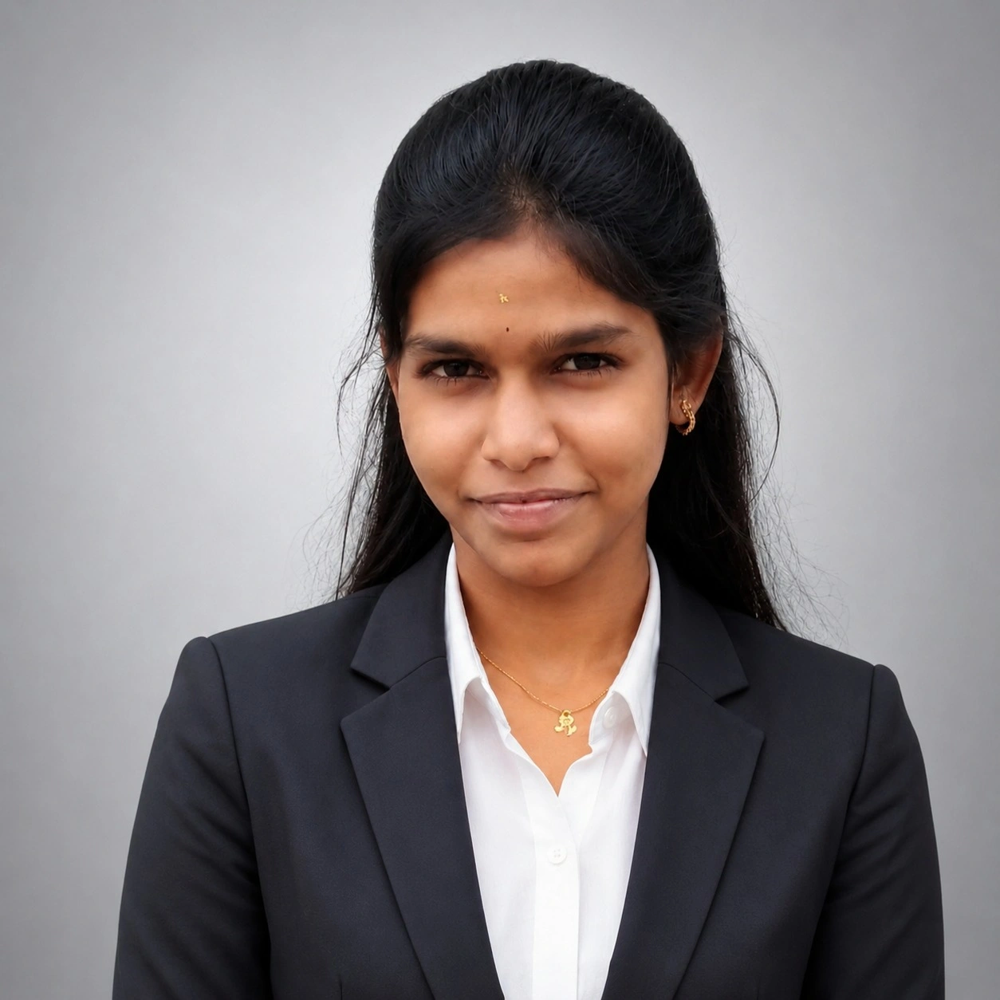
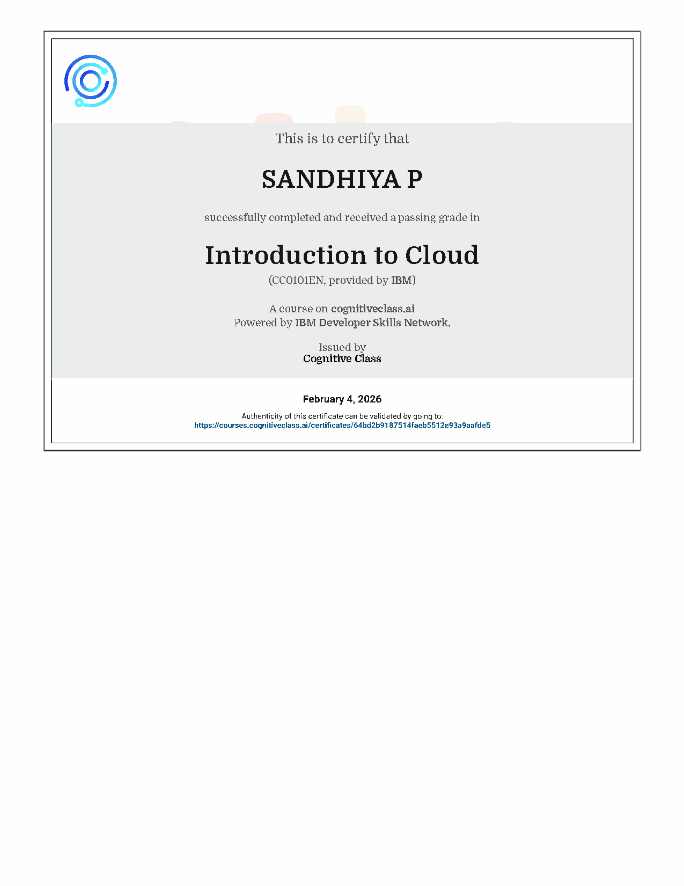
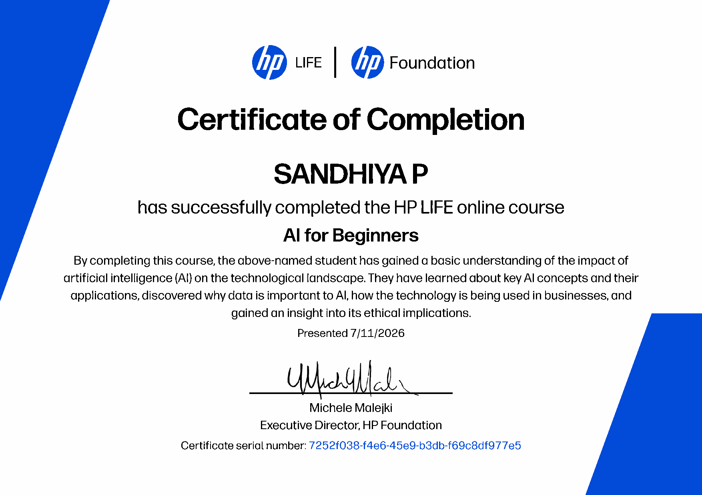
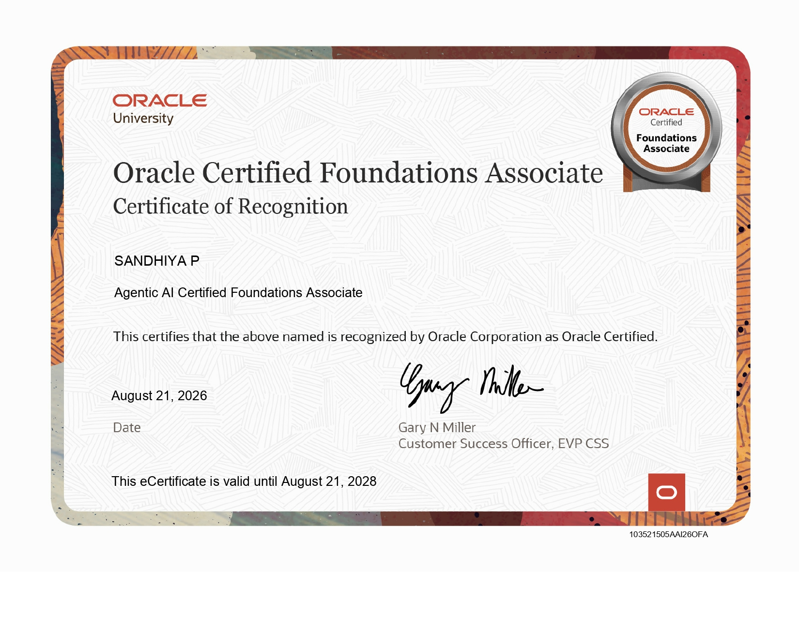

Academic Foundation
CGPA 8.8, strengthened by coursework and hands-on exploration in programming, AI and data-driven systems.
An aspiring AI and Data Science professional from Madurai, translating curious ideas into practical, people-focused technology.

01 / About me
I am pursuing B.Tech in Artificial Intelligence & Data Science at NPR College of Engineering and Technology, Tamil Nadu.
CGPA 8.8, strengthened by coursework and hands-on exploration in programming, AI and data-driven systems.
I enjoy turning real-world challenges into simple, useful solutions using Python, computer vision and frontend development.
To grow into an AI professional who designs responsible, accessible and meaningful intelligent solutions that improve everyday life.
02 / Skills & tools
Soft skills: Intentional time management · Calm multitasking · Collaborative leadership that keeps teams moving and ideas flowing.
03 / Projects & experiences
An AI-powered project exploring smarter resume analysis and feedback for job seekers.
View project post ↗An ongoing initiative aimed at applying AI to make urban spaces safer and more responsive.
IN PROGRESSCurrently preparing for Round 2 with continued learning, iteration and teamwork.
04 / Certifications


04B / Latest certification

Open my ATS-friendly resume with my education, skills, projects and contact details.
Madurai, Tamil Nadu · +91 95971 94842 · sandhiyapalpandi27@gmail.com · linkedin.com/in/sandhiya-palpandi-674529383 · github.com/sandhiyapalpandi27
A motivated B.Tech Artificial Intelligence & Data Science student seeking opportunities to apply Python, frontend development and AI fundamentals to practical problems, while growing into a responsible AI professional.
B.Tech — Artificial Intelligence & Data Science
NPR College of Engineering and Technology, Tamil Nadu
CGPA: 8.8
Programming: C, C++, Python
Web: HTML, CSS, Frontend Development
Core: Artificial Intelligence, Machine Learning, Deep Learning, Computer Vision, Automation
Tools: Git, GitHub, Canva, Figma, MS Office, Windows OS
AI Resume Analyzer
Built an AI-oriented resume analysis project using Python and Streamlit concepts to explore intelligent feedback for job seekers.
Urban Safety AI (Ongoing)
Developing an AI-based solution focused on urban safety challenges.
IEEE Hackathon (Ongoing)
Shortlisted in Round 1 and preparing for Round 2 through collaborative problem solving.
Tamil — Native
English — Professional
Intentional time management · Adaptable multitasking · Collaborative team leadership